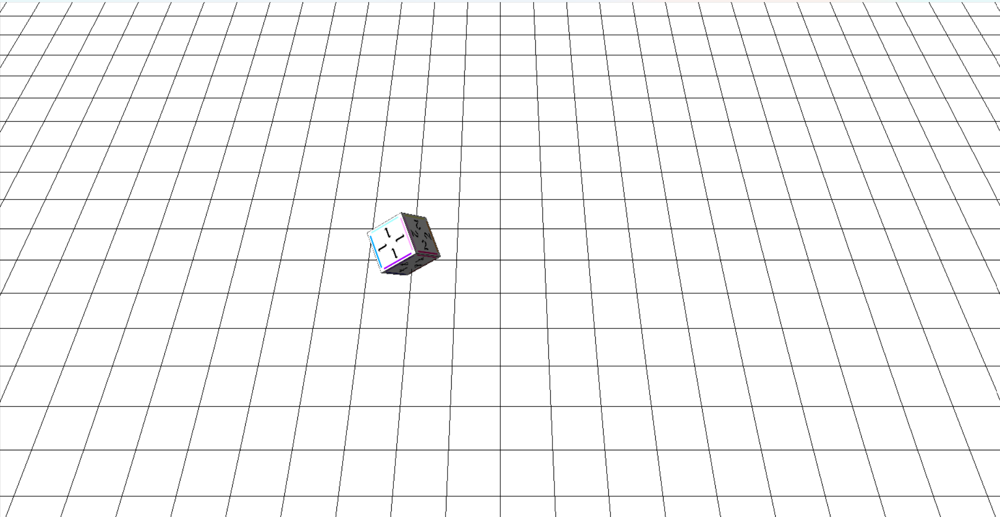

3Dグラフィックス・物理シミュレーション
C++, OpenGL, GLUT, GLSL
個人
全工程（個人開発）
授業の一環で3Dについて学ぶことになり、3Dモデルの制作を行いました。
最初は自作の読み込みライブラリを作成し、
ファイルからデータを読み込めるようにしました。
次に、そのライブラリでポリゴンファイルを読み込み、
正四角形を描画しました。
そこからオブジェクトの移動・回転、
テクスチャを張る方法、陰面処理を学び、作品を完成させました。
授業の序盤で自作ライブラリを使い3Dサイコロのモデルを作り、
終盤にかけてテクスチャの貼り付けと陰面処理を新しく学びました。
最終課題では、この二つを一つの作品としてつなぎ合わせることに挑戦しました。
序盤に自分で書いたサイコロのコードと、
終盤に参考資料をもとに書いたテクスチャ・陰影処理のコードでは
書き方や構成が異なっていたため、そのまま組み合わせただけでは
正しく動作しませんでした。
それぞれの処理がどの部分を担当しているかを一つずつ確認しながら整理し、
サイコロの描画に影響しない形で陰影処理を組み込むことに苦労しました。
最終課題では、これまで学んだことを一つの作品に融合させる必要がありました。
サイコロの部分は自分で書いたコードだったためある程度理解していましたが、
テクスチャを張りながら陰影をつける処理は参考資料をもとにしていたため、
まずその処理を大まかに切り分け、それぞれが何を担当しているかを
理解することから始めました。
そのうえでサイコロ側の処理と照らし合わせ、不要な部分を取り除きながら、
Claudeの力も借りてサイコロと陰影処理をつなぎ合わせていきました。
今回の制作を通して、3Dグラフィックスの基礎となる考え方を一通り学ぶことができました。
オブジェクトの座標をどう管理し、移動や回転をどのように計算で表現するか、
テクスチャをポリゴン面にどう貼り付けるか、陰面処理によってどの面が見えているかをどう判定するかなど、
描画パイプラインの各段階を自分の手で実装しながら理解できたことが大きな収穫です。
特にクォータニオンを使った回転や放物運動のシミュレーションでは、
数式が実際の動きとしてどう表れるかを確認しながら調整する必要があり、
数学の知識がそのままプログラムの挙動に直結することを実感しました。
エンジンに頼らず、自分で描画と物理演算を一から組み立てる力を身につけられたと感じています。